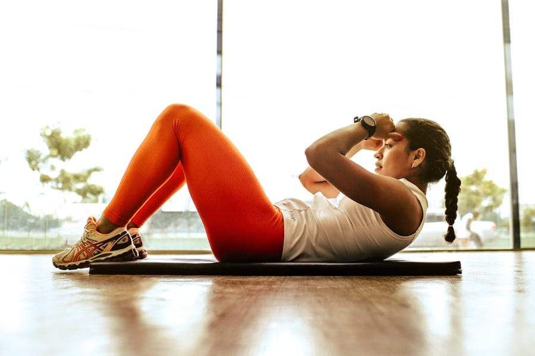

4次營養諮詢服務是由專業營養師提供的一系列個人化飲食指導，旨在幫助您建立長期健康的飲食習慣。透過4次一對一會談（每次30分鐘），我們將深入分析您的飲食內容、追蹤進度，並根據您的健康目標提供持續優化的營養建議，助您達成均衡飲食、體重管理或特定健康需求。
透過網路或通訊軟體提供服務
一次專業指導，解決您的健康疑問
不確定自己的飲食習慣是否健康？想了解如何調整飲食來達到減重或改善健康狀況的目標？
📌適合對象： 減重、糖尿病、腸胃不適等需要長期飲食調整者
📌服務內容：
💡 選擇套餐不僅更划算（單次500元，4次只要1,800元），更能確保您的健康管理有成果！
NT$1800 4次諮詢
預約您的諮詢